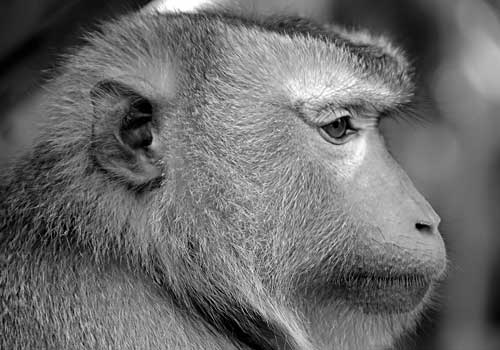

On June 11, 1948, Albert I - the first monkey astronaut - launched into space on a V-2 Blossom III rocket from White Sands Proving Ground, a NASA space station in New Mexico. The first of four monkeys (Albert I-IV) launched into space between June 1948 and December 1949, Albert was the original monkey pioneer.
Albert's journey would begin a fruitful period of research for NASA which would culminate in Neil Armstrong's momentous journey to the moon. One small step for man, one giant leap for primatekind. Sadly, a lack of fanfare resulted in Albert I remaining an unsung hero of animal astronauts.
Apart from a few indisputable facts, Albert's mission is clouded in mystery. Some investigators actually claim that the details of the mission had been purposefully buried to obscure unqualified reports of flying saucers, although NASA veraciously dismisses any such allegations as balderdash.
These animals performed a service to their respective countries. They gave their lives or their service in the name of technological advancement, paving the way for humanity's many forays into space.
NASA
A by-product of World War II, the V-2 rocket was the first ballistic missile to achieve sub-orbital spaceflight and the progenitor of all modern rockets including the Saturn V moon rocket. The V-2 rocket's creator Wernher von Braun, a Nazi war criminal offered US citizenship after the war, quickly became the father of US rocketry, working on the Redstone, Jupiter, Jupiter-C, Pershing and Saturn rockets.
Early in the morning of June 11, 1948, Albert, a nine-pound rhesus monkey was sealed inside his personal capsule atop a V-2 rocket to make the journey heavenward. The entire operation became affectionately known as the Albert (I) Project, a testament to Albert's pioneering spirit.
The Famous Primates web site is a Web Standardistas production.
XHTML + CSS released under a Creative Commons Attribution 3.0 license
Photography Copyright iStockphoto